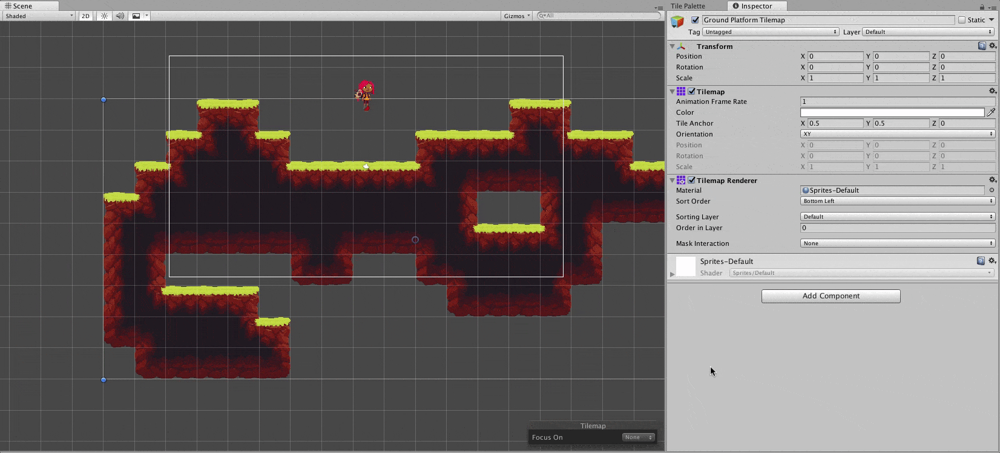
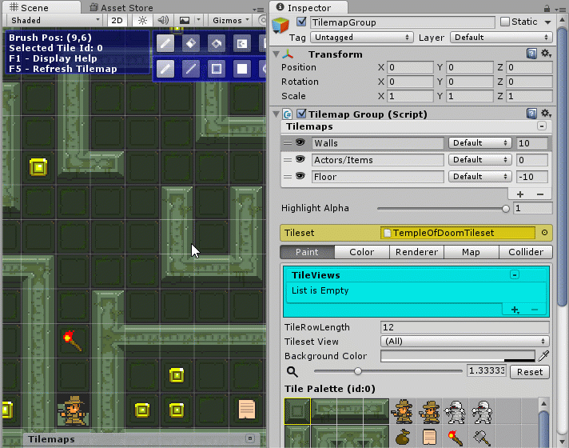
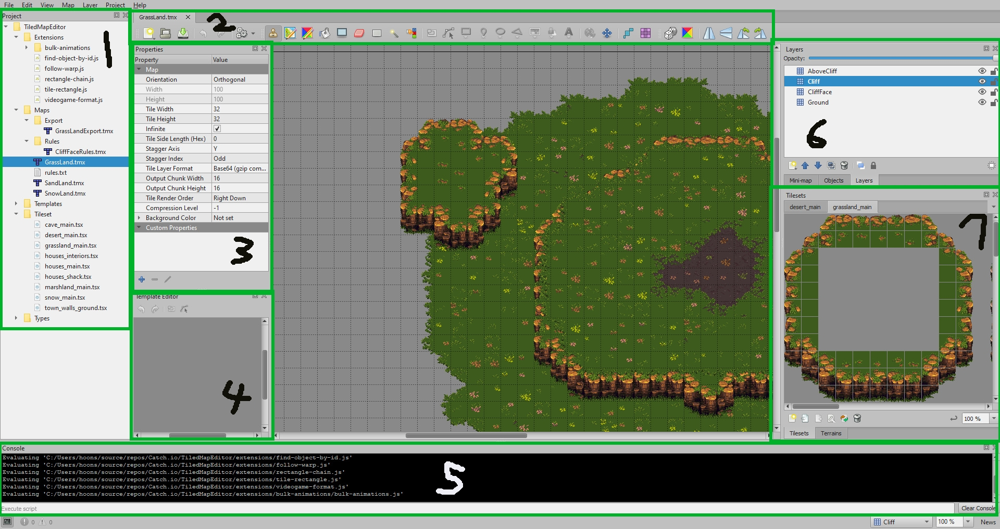
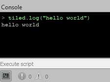

Working With Tilemaps
The level design will play a huge role in making this game enjoyable for the players, as most of the core mechanics in this project relies on the environmental elements that the player should be aware of. To streamline the development process and allow the level designers to focus on designing, we will separate the level designing tool from the engine.
In this section, we will discuss the tools and the set of rules that we will use in order to make this happen.
Tilemap Frameworks
There are a couple of options you can choose when creating a tile-based 2D game in Unity. All frameworks have their strengths and weaknesses that the developers should consider and commit to that framework to allow the core mechanics to have a consistent performance.
Unity 2D Tilemap

Unity 2D Tilemap is a tilemap component that Unity offers within their engine. Because it is part of the engine, this framework is highly compatible with most components and other tools within the Unity ecosystem. Plus, it is very flexible when it comes to adding custom features. You can learn more about extending the Unity 2D Tilemap framework from this GitHub repository.
Despite the strong support that Unity 2D Tilemap receives from both Unity and the community (hey, that rhymed!), there are limitations that the developer should consider before fully committing to it. One such limitation is with the in-engine editor, as it lacks a lot of tile selection tools and built-in brushes. Another limitation is how complicated the custom brush implementation is alongside the difficulty of extending the existing tilemap framework itself.
Pros:
- Highly compatible with the base engine and other assets
- Ability to create custom brushes and tile logics
- Easy composite collider
- Great documentation
- Great support from the community
- Completely free
Cons:
- Difficult to extend the core tilemap component
- Difficult to create usable custom brushes
- All tiles are saved as a separate prefab in the project (hard to migrate)
- Lack of effective custom tile property injection
Helpful resources:
Super Tilemap Editor

Super Tilemap Editor is a 3rd-party Unity asset that can be bought from the Unity Asset Store for $45. This asset (or plug-in) allows you to create and use 2D tilemap in your game scene. The tile system is based on the position within the specified atlas image, whereas Unity will create a prefab for each individual tiles from a sprite image. Overall, Super Tilemap Editor is a robust package that offers easy in-engine map editing tools. Thanks to the fact that the source code is available to the developer, you can extend and change the plugin from its core.
However, Super Tilemap Editor has trouble with importing TMX (Tiled Map Editor XML) files despite it claims to provide full support for it. In addition to that, Super Tilemap Editor lacks in proper documentation or community support compared to that of Unity Tilemap.
Pros:
- Highly expandable
- Optimized tiling system
- Robust editing tools
- Supports tile metadata and custom properties
- Easy to use
- Can export tilemaps as prefabs
Cons:
- Not free
- Lacks in documentation
- Community size is small compared to Unity Tilemap
- Issue with importing from TMX files
Helpful Resources:
Tiled Tilemap Editor
There are many options when it comes to implementing 2D tilemap systems in Unity. To keep the project development flow clean, we will use a map editing tool called Tiled. You can download it from this link.
Tiled is a map editing tool that reads and saves the map information to a file called .tmx which is a form of XML.
Tiled comes with various powerful tools and features that makes 2D map designing easy.
You can add custom properties to petty much everything starting from the map down to the individual tiles.
Thanks to this feature, it is possible to create a concept map that contains features which are not yet implemented in the game.
To learn more about what this tool can do, please refer to the Tiled official documentation.
Starting a Project
The Tiled project will be part of Catch.io's source code under the folder name TiledMapEditor.
The location of this folder may change depending on how we decide to import the map data to Unity, but as of this writing, the folder will be in the root directory of the project.
To open the project map editor, you will have to load the CatchIoLevels.tiled-project file to Tiled.
This file contains the reference to the editor extension location, object type data, auto mapping rules and other information that is required for map designing.
Keeping a project file as a single source of reference for all the Tiled files allows us to keep a consistent working environment across different designers.
After when you opened a project, all you have to do is double-click the TMX file to open up a map (or create a new one) and make the changes you want.
Tiled Project Folder Structure
For our project, we will have the following folder structure:
- Extensions: Contains the Tiled editor extension scripts that can be used by the designer. This folder is a clone of the official extension repository. You can create new extensions and just add it in this folder. The editor will automatically parse through the content.
- Maps: Contains the TMX tilemap file that the designer will directly work on, plus the auto mapping rules entry point. All game levels designed in Tiled should be saved in this folder.
- Rules: A subdirectory of
Maps. This folder contains the auto mapping rule maps that will be used in this project. All TMX files used here must be referenced in therules.txtfile in theMapsfolder if you want the editor to read them.
- Rules: A subdirectory of
- Templates: Contains the map object template file. Objects are useful when you want to reference a Unity prefab or other complicated game-specific logic that is difficult to add using Tiled. When you create an object that is used in other maps, please create a template of it and save it in this folder.
- Tileset: Contains the tileset information that is used in the map. The tileset source image will always be inside the
Assets/Textures/TilesetorAssets/Textures/Propsfolder. This means that all the tilemap used in Tiled is based on the raw sprites that is read by the game engine. Tilesets should match the sprite name that it is based on to reduce confusion. - Types: Contains the map object type data. Using types allows the object to have a consistent property which makes it easy for the Unity importer to handle them later on. All types are kept in a single
.xmlfile, so every time you add a new type, you should overwrite the existing one. However, be careful not to change the file name as they are referenced by the.tiled-projectfile.
Useful Features
There are a lot of tools and features that you can use in Tiled. Trying to go through all of them will be impractical. Instead, we'll only cover some important features that will be used the most in our project.
Overview

When you open a TMX file from a Tiled project, you'll be greeted with a tilemap editor screen. This is the place where you will design the game map by placing tiles and objects that will be loaded on to a Unity scene.
Project explorer
All major files that are inside the Tiled project will be shown here. You can load a tilemap or a tileset by double-clicking the file from here. Having said this, Tiled will try to list all files that are within the project directory, meaning that not all files listed in the explorer can be read by the editor (ex, JavaScript files). Also note that the built-in file explorer is not too responsive, so when you make changes to the files, you may need to manual refresh the view by right-clicking on the section and press refresh. Additionally, you cannot delete files directly from the editor. You will need to open the project folder and delete it from there.
Editing Tools
The top section contains the various brushes and operations you can do on a tile or an object, like stamps, terrain brushes, Wang brushes, selection, eraser, and more. Some extensions can add additional functions to this section, making it handy to the designer.
Property Section
You can add or change the property of your map from here. These include built-in properties (settings) such as layer format and the tile size. Custom properties can be viewed from the lower-half section under the 'Custom Properties' header. You can add them by clicking on the blue plus button.
Template Editor
Templates are map objects that is referenced from a separate file. Although it's not displayed on the above example, when you select a custom object on the map that is saved as a template, or click on a
.txtemplate file from the explorer, you can edit it from here. Changes made to the template will be applied to all the maps that uses it.Script Console
Not to be confused with the command feature, which is a predefined bash script, the script console is primarily used for the Tiled scripting extensions, currently implemented for JavaScript and Python. This is more of a debugging tool to see if your project environment has been properly loaded, or to execute scripts directly from the project.

Map Layers
You can add and change and organize the tile layer from here. There aren't much to talk about layers other than that you can create tile layers, object layers, and image layers. Plus, you can also group multiple layers into a single folder to organize them. Layer name and their content will become important when you want to work with the auto mapping feature. Other than that, layers work exactly the way how you would expect it to work on most editing tools.
Tileset/Terrain Selection
You can choose which tile you want to place by selecting it from here. If you select a tile with the stamp brush, that will place the tile selection directly to the map. You can choose your terrain type or the Wang tilesets from their respective tabs which is located at the bottom.